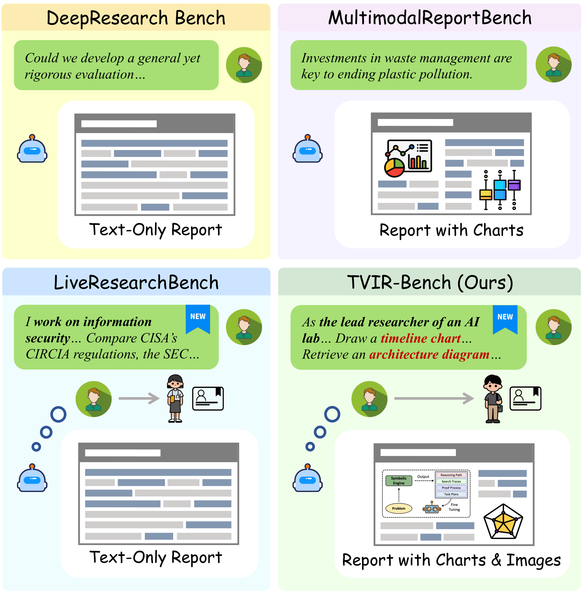
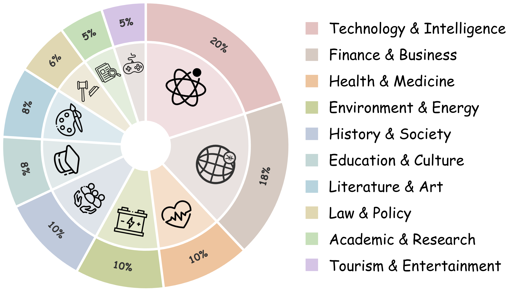
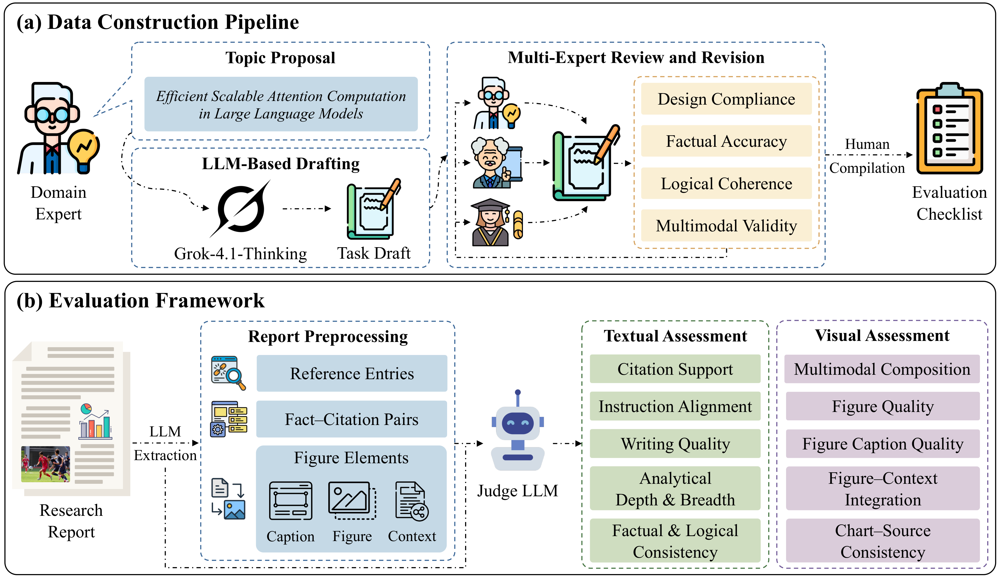
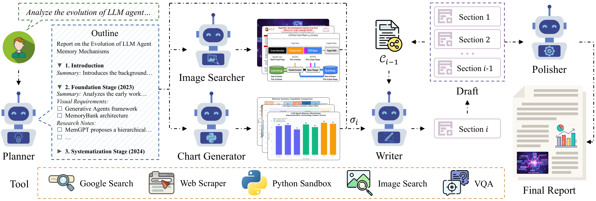
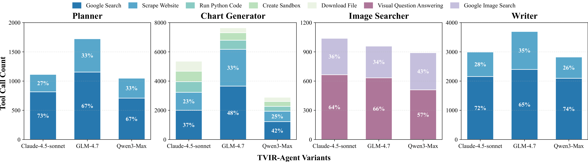
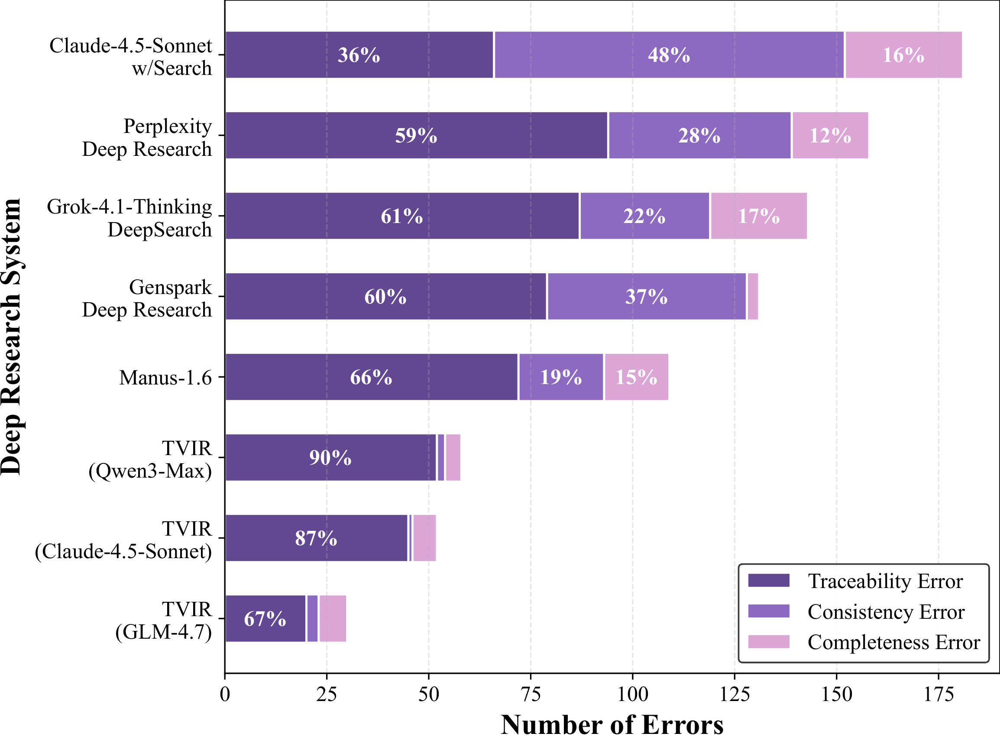

Deep Research Agents have shown strong capability in multi-step information retrieval, reasoning, and long-form report generation, but existing benchmarks and systems remain predominantly text-centric, with limited evaluation of whether visual elements are factually reliable and well aligned with the surrounding analysis.
To address this gap, we introduce TVIR (Text-Visual Interleaved Report Generation), which includes:
A benchmark of 100 expert-curated multimodal deep research tasks that require visual elements to serve specific analytical sub-goals.
A hierarchical multi-agent framework for constructing outlines, retrieving images, generating charts with traceable sources, and composing reports.
A comprehensive framework combining Textual Assessment and Visual Assessment for evidence-driven report evaluation.
Existing deep research paradigms remain predominantly text-centric. Most benchmarks and agent frameworks evaluate success based on textual coherence, depth, and citation support, while overlooking a critical characteristic of real-world professional reports: the integration of visual evidence.

Figure 1: Comparison of representative deep research benchmarks. Existing benchmarks mainly focus on text-only or weakly multimodal reports, whereas TVIR-Bench requires text-visual interleaved reports with semantically grounded charts and retrieved images.
A comprehensive multimodal deep research benchmark with 100 expert-curated tasks spanning diverse domains and complexity levels.

Figure 2: Domain taxonomy of TVIR-Bench.
Tasks grounded in realistic user needs
Focused on practical requirements
Requires substantive analytical synthesis
Novel and timely topics
Explicit multimodal elements required

Figure 3: Overview of TVIR-Bench, including data construction pipeline and evaluation framework.
A hierarchical multi-agent framework for text-visual interleaved report generation.

Figure 4: Overview of the proposed multi-stage framework for report generation.
The Planner parses user tasks and iteratively invokes external tools (Google Search, web scraping) to retrieve relevant information. It synthesizes collected information into a structured outline with section titles, summaries, planned visual requirements, and research notes.
Two specialized agents handle different visual needs:
The Writer generates the report section by section, conditioning on the current outline unit and a dynamically updated global context. It determines insertion points for visual assets and composes Markdown content with interleaved text and visual elements.
The Polisher processes references and figures at the report level: removes uncited references, deduplicates globally by URL, renumbers into a unified reference list, and reassigns figure IDs in sequential order.
| Model | Aggregate | Textual Assessment | Visual Assessment | ||||||||||
|---|---|---|---|---|---|---|---|---|---|---|---|---|---|
| Overall | TA | VA | CS | IA | WQ | ADB | FLC | FQ | MC | FCQ | FCI | CSC | |
| TVIR-Agent (Claude-4.5-Sonnet) | 74.44 | 70.12 | 78.76 | 51.20 | 81.09 | 69.88 | 72.22 | 76.20 | 87.17 | 77.80 | 74.49 | 76.75 | 77.58 |
| TVIR-Agent (Qwen3-Max) | 73.53 | 70.03 | 77.03 | 53.68 | 76.69 | 69.30 | 67.48 | 83.00 | 91.71 | 67.80 | 72.44 | 74.56 | 78.63 |
| TVIR-Agent (GLM-4.7) | 72.62 | 71.64 | 73.61 | 68.64 | 71.98 | 69.20 | 68.16 | 80.20 | 84.61 | 62.55 | 70.13 | 73.39 | 77.35 |
| Manus-1.6 | 69.73 | 69.42 | 70.04 | 45.57 | 74.12 | 72.15 | 62.84 | 92.40 | 86.27 | 70.75 | 66.14 | 71.03 | 56.02 |
| Claude-4.5-Sonnet w/Search | 68.72 | 70.15 | 67.30 | 47.53 | 79.32 | 69.37 | 70.52 | 84.00 | 90.24 | 63.85 | 61.47 | 53.43 | 67.49 |
| Genspark Deep Research | 66.99 | 68.70 | 65.29 | 35.27 | 83.71 | 69.28 | 70.64 | 84.60 | 92.87 | 70.70 | 63.58 | 59.00 | 40.28 |
| Perplexity Deep Research | 61.20 | 68.95 | 53.46 | 44.60 | 81.03 | 67.60 | 70.64 | 80.90 | 73.62 | 62.90 | 59.02 | 63.41 | 8.35 |
| Grok-4.1-Thinking DeepSearch | 52.49 | 58.56 | 46.43 | 17.72 | 60.65 | 67.68 | 57.58 | 89.20 | 80.43 | 52.15 | 47.04 | 46.76 | 5.75 |
| Gemini-3-Pro Deep Research | - | 58.52 | - | 14.96 | 58.31 | 66.88 | 63.94 | 88.50 | - | - | - | - | - |
Best scores are highlighted. Gemini-3-Pro generates text-only reports and cannot be evaluated on VA metrics.
TVIR-Agent variants achieve the strongest aggregate performance among all evaluated systems, with TVIR-Agent (Claude-4.5-Sonnet) obtaining the best Overall score.
TVIR-Agent (GLM-4.7) achieves 68.64 on Citation Support, outperforming the best commercial system by 21.11 points.
TVIR-Agent (Claude-4.5-Sonnet) scores 74.49 on Figure Caption Quality, exceeding Manus-1.6 by 8.35 points.
Current systems remain much stronger at textual synthesis than at integrating visual assets, highlighting a significant gap in existing paradigms.

Figure 5: Tool usage distribution of TVIR-Agent variants across major components.

Figure 6: Distribution of structural errors across deep research systems. TVIR-Agent variants produce substantially fewer structural errors than commercial systems.
| System Variant | TA | VA | Overall |
|---|---|---|---|
| TVIR-Agent (Full) | 69.23 | 78.62 | 73.92 |
| w/o research notes | 68.63 (-0.60) | 78.42 (-0.20) | 73.52 (-0.40) |
| w/o Image Searcher | 67.82 (-1.41) | 77.23 (-1.39) | 72.53 (-1.39) |
| w/o Chart Generator | 66.77 (-2.46) | 60.91 (-17.71) | 63.84 (-10.08) |
Removing the Chart Generator has the largest effect, highlighting its central role in visual synthesis and cross-modal alignment.
@inproceedings{tvir2026,
title={TVIR: Building Deep Research Agents Towards Text-Visual Interleaved Report Generation},
author={Anonymous},
booktitle={Proceedings of the 64th Annual Meeting of the Association for Computational Linguistics (ACL)},
year={2026}
}